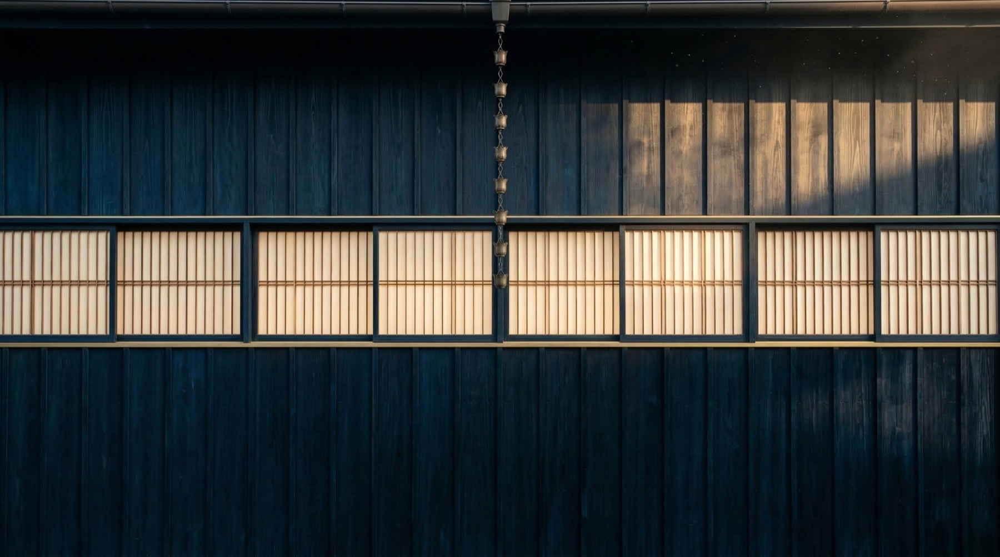
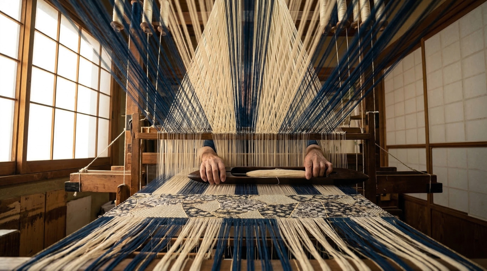
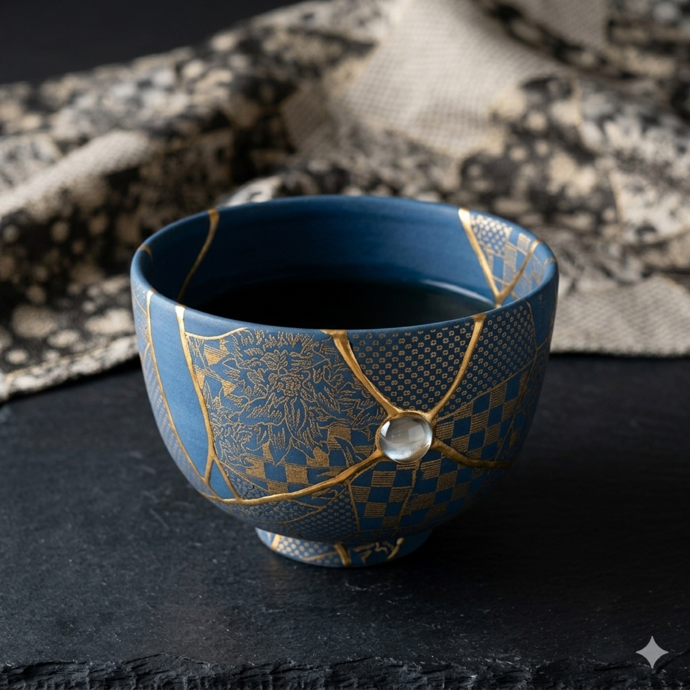
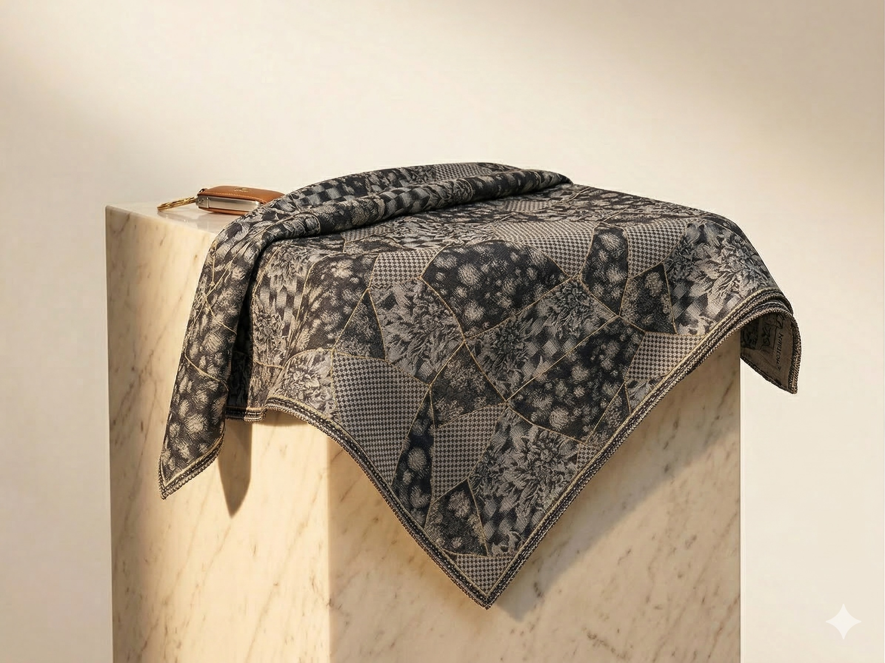

Collector Model · Spring Summer 2026
Where Japanese textile tradition meets Parisian composition. A car dressed, not configured.
Dressed — the way a couturier dresses a body. With textile, with patience, with the understanding that surface carries meaning. That what covers a thing can carry its entire meaning.
Kinsō begins in Kyoto, in the workshops of Nishijin-ori — the silk-weaving district where jacquard looms have produced the world's most intricate textiles for over five centuries. Where botanical illustration meets the patience of thread. Where a single obi can take six months to complete because every petal, every leaf, every tendril is not printed but woven.
This is the tradition that HOF chose as its starting point. Because it understands something that automotive design has forgotten: that decoration is language.
"The most precise things are never cold. They are luminous."
Nishijin-ori — five centuries of weaving botanical precision, Kyoto.
The textile at the heart of Kinsō is a structure — a botanical jacquard where every motif is constructed thread by thread, the way a building is constructed beam by beam. Flora drawn from Edo-period botanical illustration, translated into a weave dense enough to upholster an interior, refined enough to line a couture jacket.
Aizome Blue — the deepest indigo, born from fermented leaves in a process that takes weeks of patience. Japanese indigo dyeing is not chemistry. It is fermentation, intuition, time. The blue that emerges carries a depth that synthetic dyes cannot replicate — a blue that remembers the plant it came from.
Silk Gold — the colour of first light on raw silk. Warm but never yellow. Lit from within but never loud. The tone that appears in the first seconds of dawn, before the world decides what colour the day will be.


Material study — Silk Gold botanical jacquard against Aizome Blue.
The weave — every petal constructed on the loom.

The loom — where thread becomes language. Nishijin-ori, Kyoto.

Aizome — the blue that carries memory. Fermented indigo, Tokushima.
Every HOF composition begins with a dialogue between two tones. For Kinsō, the conversation is between warmth and depth — the warm gold of raw silk and the fermented indigo of Aizome tradition.
Silk Gold is the light. The surface that catches morning. The warmth that tells you a space has been considered down to the last thread. Aizome Blue is the weight. The tone that grounds, that anchors, that gives the composition its gravity.
The two-tone exterior — Silk Gold above the beltline, Aizome Blue below — borrows from the language of fashion, where contrast creates conversation. Like a Japanese designer who first stepped onto the Paris stage, Kinsō bridges two worlds without compromise. The botanical jacquard woven for this expression carries the patience of observation found in early botanical illustration — every petal, every vein recorded with reverence.

Kiriko glass — where every cut is a decision about light.

HOF G · V — Kinsō · Silk Gold & Aizome Blue · Side Profile.


The same botanical jacquard — from car interior to couture jacket.
Coach Doors are a threshold — the moment between the outside world and the interior world. They open like the entrance to a private room. The gesture of arrival, slowed down, made considered.
The two-tone exterior — Silk Gold meeting Aizome Blue — is not decoration. It is architecture. The upper body wears one tone, the lower another, the way a well-dressed figure balances colour between jacket and trouser, between hat and shoe.
Inside, the interior becomes a room — with armchairs, with textile ceilings, with the quiet of a private library. Lounge Seats that recline like armchairs in a Kyoto tea house. Botanical jacquard panels that line the ceiling and doors the way silk lines the interior of a bespoke trunk.
"We don't configure cars. We compose them."

Coach Doors — a threshold between worlds.


Car Couture — the same textile, carried.


Interior details — jacquard panels, gold accents, the H-pattern everywhere.
The rear — lounge seats, a room designed for the connoisseur.

The weave — where pattern becomes surface, thread by thread.


Driving Gloves · Silk Scarf · Gold H Clasp
The bass speaker wears a gold surround — gold — only gold. The speaker grille is lined with botanical jacquard, so that even sound passes through textile. The H-pattern appears everywhere — embossed into leather, woven into fabric, etched into metal — the geometric DNA that connects every surface to every other.
Choices that take longer to make than to notice. The kind that reveal themselves slowly, over months of ownership, the way a well-tailored jacket reveals its construction only after years of wearing.
This is what precision means at HOF. Precision as care. Every detail placed where it belongs.

The Lounge — where you stay.


Not merchandise. Couture.

The textile — the same botanical jacquard, from interior to jacket to scarf.

Kintsugi — the art of making repair beautiful. Gold as celebration. Every fracture made beautiful.
金装 — the Japanese word for adornment. The discipline of making every visible thing carry invisible meaning. Surface as language — where what covers a thing tells you what lives inside it.
Botanical jacquard on the loom. Aizome Blue from fermentation tanks in Tokushima. Silk Gold from nature's first light. Coach Doors that open like the entrance to a private room. An interior that is a room. Accessories that carry the same textile from the car into the world.
Spring Summer 2026. The moment where Nishijin-ori meets automotive Manufaktur — and the car becomes a garment.
"Curated, Not Made."
HOF G · V — Kinsō · Collector Model
Silk Gold & Aizome Blue · Coach Doors · Botanical Jacquard Interior
Kinsō Weekender
From €4,800
Kinsō Doctor's Bag
From €3,600
Kinsō Men's Jacket
From €6,200
Kinsō Women's Jacket
From €5,800
Kinsō Driving Gloves
From €980
Kinsō Silk Scarf
From €1,200

Kinsō Silk Scarf Noir
From €1,200
Botanical couture, carried from interior to wardrobe. Discover the full Spring Summer 2026 collection — or begin your personal consultation.